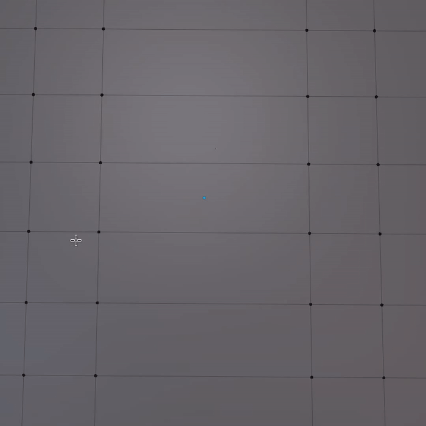
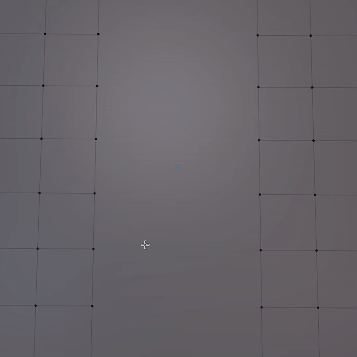

Smart Vert
shortcut 1 in edit mode to merge at last/active/mouse, as described below
shortcut SHIFT + 1 in edit mode to merge at center
shortcut ALT + 1 in edit mode to merge paths
shortcut CTRL + ALT + 1 in edit mode to connect paths
shortcut SHIFT + ALT + 1 in edit mode to invoke Slide/Extend
Smart Edge simplies various common task around Vertices.
Selection
Merge to last/active/mouse
in vert mode with 1 vert selected: do vertex bevel
in vert mode with more than one vert selected and one active vert: merge to the active/last vert
in vert mode with more than one vert selected and without an active vert: merge to the vert closes to the mouse
in edge mode with 1+ edges selected: merge to the vert closest to the mouse, and do it per loop
in face mode with 1+ faces selected: merge to the vert closest to the mouse, and do it per face island
Merge Paths
in vert mode make a U shaped selection of the ends of 2 paths

Connect Paths
in vert mode make a U shaped selection of the ends of 2 paths

Slide/Extend
in vert mode 2+ vertices with one being active, where the active vert remains fixed and is used to determine the direction.
in edge mode where the mouse proximity to the end of the edges determines the direction.
Using Smart Vert
Note
This is an old video and does not cover all the features described above.
For instance, merging can now be done using edge and face selections, where the closest vert to the mouse is used as the target.
Note
Sliding/Extending can also be done using edge selections, and can snap to edges or faces using CTRL.
If used with a single edge, it can also maintain a flat end face using F, see statusbar.